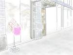

她在大街的扶手栏上已经坐了很久。盯着那幢高层大厦的玻璃门。直到眼睛开始发花。
初秋的阳光很温暖，象一只柔软的手抚摸在脸上。雨季刚刚离开这个城市。
空气仍然潮湿。
她听到树叶上残留的雨滴打在皮肤上的声音。饥饿使她的感觉异常敏锐。也许眼睛都会灼灼发亮。一切应该正常。她相信她的运气会比乔好。
乔最后一天离开是去丽都。她还在家里休养。乔对着镜子仔细地涂完黑紫色的口红。
她的嘴唇就象一片饱含毒汁的花瓣。乔说，老板打电话来，今天晚上会有台巴子来看跳舞。
我明天回来买柳橙给你。然后再去看看医生。
她走后的房间，留下一地肮脏的化妆棉。象白色的散乱尸体。一个月后散发出腐烂的气息。
她等了乔整整一个月。
终于确信乔已经消失。
她们是在机场认识的。乔那天穿黑色的T 恤和旧旧的牛仔裤，戴豹纹边框的太阳眼镜。素面朝天，象个独自旅行的女大学生。
象所有跳艳舞谋生的女孩，在白天她们总是冷漠收敛的样子，看人都懒得抬起眼睛。她不知道为什么乔会注意她。乔执意问她是否去上海。她的口袋里除了机票已经一无所有。
她说，她去上海找工作。海南在夏天太热了。
她们坐在空荡荡的候机厅里，喝冰冻咖啡。夜航的飞机在天空中闪烁出亮光。然后乔的手指轻轻地抚摸她的手臂。她转过脸去看乔。乔冷漠地注视着她的嘴唇。乔的手指象蛇一样冰冷的游移。
乔说，你跟我走。她逼近安的脸。你是否想清楚。乔的手贴着安的皮肤开始灼热。她闻到乔呼吸中的腐败的芳香。然后看到乔的脸上，左眼角下面一颗很大的褐色眼泪痣。
她们在浦东租了一间房子。乔去丽都跳舞，每天晚上出去，早晨回来。整个白天乔几乎都是在漆黑的房间里睡觉。快下午的时候，才起来吃点东西。或者出去逛逛街。安去丽都看过乔的演出。她穿着鲜红的漆皮舞衣，在铁笼子里象一只妖艳的野兽。男人冷漠地视线在黑暗中闪烁。在他们的眼里，乔仅仅是一个性别的象征。安局促地站了一会。混浊闷热的空气终于让她无法呼吸。
那天早上她不愿意让乔碰触她的身体。乔伸手就给了她一个重重的巴掌。乔非常生气。乔歇斯底里地咒骂她。把盛着冷水的杯子砸到她的身上。乔披散着长发，泪流满面，身上只穿着一条薄薄的睡裙。终于她平静下来。她说，安，你不了解。有时我们是无能为力的。她抱住一言不发的安。她亲吻安的手指。你可以选择我或选择另外一个男人。但你无法选择生活。
这样的争吵常常爆发。她已经习惯。乔不喜欢男人。乔的内分泌失调，脾气异常暴躁。
乔最喜欢做的事情就是白天睡醒的时候，在房间阴暗的光线里亲吻她的肌肤。一寸一寸，温柔缠绵。她说，只有女人的身体才有人性的清香。女人其实是某一类植物。
乔问她，你是否爱过男人。她说，爱过。
他应该已经结婚了。做了父亲。开始发胖。她第一次看见他的时候，他才14岁。是非常英俊明亮的少年。爱了他整整10年。终于疲倦。乔说，有没有做爱。她说，只有一个晚上。预感到自己要离开他了，所以想要他。整个晚上不停地做爱。是他大学毕业的那个夏天。想把自己对他十年的爱恋都在一个晚上用完。没有了。
乔看着她。两个人的眼神一样的空洞。
她在阳光下换了一种姿势。等待的男人还没有出现。
她已经守候了他一个星期。
整个上午，她只吃了半筒发霉的饼干。乔的消失使她又回复一贫如洗的状态。她费力地咽着口水，想去除喉咙中余留的霉菌气味。她不知道那里是否长出绿色的绒毛。
她的白色棉布裙子已经洗得发黄。走进百货公司的时候，她的脸色因为长时间的隐匿而苍白。但一个小时后走出店门，她有了一张无懈可击的脸。蔷薇般的胭脂，珊瑚色的口红，还有眼角隐约闪烁的银粉。这些都是化妆品柜台的试用装。服务良好的小姐为她进行了试妆。而她的挎包里只有几块硬币。
说谢谢的时候，她在小姐的眼神里发现了某种轻蔑。但是这无法影响她的心情。在大街的人群和阳光里面，她感觉自己还是这样年轻。青春如花盛开。虽然能够温柔采折的人已经远走。整条大街散发着物质沸腾的气息。贫穷是一种可耻。乔说过，我们应该有很多钱，安。如果没有爱，有钱就可以。就这样她们在人潮里起伏。她们象路边的野花，自生自灭。开了又败。
22岁她离家出走。在轰隆作响的火车上，想着时光会如广阔的田野伸延到远方。充满神秘和传奇。
命运握着手心让她猜测里面隐藏着什么。她的心情不安而振奋。不知道漂泊流离的生活从此开始。再也无法回头。而17岁就出来跑江湖的乔，只是淡淡地说，在你放弃的时候，你同时必须负担更多的东西，包括你对所放弃的不言后悔。
那么乔是否后悔过呢。乔最快乐的事情，是在巴黎春天里面，轻轻一挥手，就买下一双几千块的PRADA 的细带子皮凉鞋。植村秀的新款眼影。VERSACE 手工刺绣的吊带裙子。乔对殷勤的店员从来不正眼看他们。走在百货公司华丽空敞的店堂里，乔的脖子显得挺拔而雅致。也许这是促使乔从湖南农村跑到繁华城市的梦想。乔接受了支撑起这个梦想的代价。所以当客人把烟头扔到她的脸上，她会蹲下去，妩媚地把它放在唇上。
醉生梦死。乔说，生活会变得象一朵柔软的棉花。让人沉沦。但是没有尖锐的痛苦。
只要不揭穿真相。
下午五点左右，大厦的玻璃门流动的人量开始增加。那个男人出现的时候，她刚好在阳光下眯起眼睛。但是他的确出色。虽然中年的身材开始有些松懈。一张脸还是英俊而敏锐。他坐进了了一辆黑色的本田。把挡风窗摇了下来。他看到了她，他的目光肆无忌惮地停留在她的脸上。
她跳下扶栏，慢慢地向他走过去。脚上穿的细高跟凉鞋是乔留下来的。走路的时候她感觉到自己身体的摆动。在脸上停留的男人的视线也在晃动。她维持着自己在晕眩感觉中的恐惧。
她走到了他的车窗边，她的两只手搭在车顶上，俯下脸很近地看他。她听到他的呼吸。在他的眼睛里，她看到自己艳丽倾斜的容颜。男人沉默地看着她。然后他说，上车吧。
有一度时间她想离开乔。
她喜欢男人比女人多。她和乔不一样。生活时而奢侈，时而拮据，还有乔的喜怒无常。
她感觉到乔对她的迷恋是一片冒着温热湿气的沼泽要把她吞噬。芳香而糜烂。温情而龌龊。
她在上海找的第一份工作是在一个空运公司做业务。打单子，联系客户。虽然工作很累，但是让她呼吸到正常生活的空气。白天出没的人和在夜晚出没的人是不同的。夜色中的人更象动物。
林是她在进出口公司的一个客户。第一次见到他的时候，是在他的办公室里。25层的大厦上面，落地玻璃窗外是一片晴朗明亮的天空。林穿着一件白色的衬衣，挽着袖口。他的眼睛让她想起她爱过的那个14岁少年。清澈温和。眼神象一块深蓝色的丝绒。她看到他的时候，突然觉得时光如潮水退却。她温柔酸楚的心还在那里。轻轻地呼吸。
林请她喝咖啡。黄昏的咖啡店外面是潮湿的暮色和雨雾。寂静幽暗的店堂里有漂浮的音乐和烟草味道。还有浓郁的咖啡香，让人恍然。林给她点了核桃夹心泥和香草杏仁咖啡。他的眼睛一直注视着她。沉默而怜惜。墙上有一幅让客人留言的小板。MESSAGE EXCHANGE .上面插满各种各样的小纸条。
中文，法文，英文，德文。然后林把他的香烟空盒子撕下一条来，在上面用圆珠笔写了一行字，也插在了上面。他抽的是韩国的烟，那个牌子很奇怪，叫THIS. 纯白的底色上有蓝色和紫色的图案，好象随手抹上的颜料。她没有看。从咖啡店出来的时候，雨停了。林的亲吻象蝴蝶的翅膀在她的唇间停留。
她轻轻地闭上眼睛。她问自己，是否可以再爱一次。
男人的车停在GRACE 门前。那是一家来自欧洲的服饰店铺。男人说，进去换套衣服。
店里几乎没有人，只有幽暗的香水味道。他给她挑了一条暗红的上面有大朵碎花的雪纺裙子。里面有黑色的衬裙。一双黑色缎子做的凉鞋，系带上有小粒的珍珠。他用信用卡付掉了她无法预计的数字。他说，我只喜欢给漂亮的女孩买衣服。这个裙子的颜色适合你的胭脂。他说着一口台湾普通话。
她在试衣镜里看着焕然一新的自己。她的挎包里仍然只有几块硬币。她双手空空什么也没有。而这个男人可以挥金如土。给她买一套行头就好象随便抛给鸽子的的几块碎面包屑。
再次回到车里，男人漫不经心地问她，你喜欢吃什么。她说，随便。那么我们去凯悦吃泰国菜，听说那里有美食展。他开着车。不动声色的，他的手放在了她的腿上。你很瘦。但是我喜欢你的眼神。他专注地看着前面的路况。似乎是很不经意的。他说，你喜欢什么样的体位，上面还是后面。她轻轻咬住自己的嘴唇。她听到自己的牙齿似乎会发出咯咯的声音。她害怕一发出声音，她就会扑到窗外。
那是春天开始的时候。她在上海的恋情象一场绚丽的花期。她想她用所有的钱买了一张到上海的飞机票是宿命的安排。这个清秀温和的上海男人，把她从黑暗的夜色中拉了出来。
乔很快发现她的恋情。乔说，你不要做梦了。这个男人负担不起你的过去和未来。他只能给你一段短暂的现在。她说，我要这段现在。比一无所有好。乔暴怒地撕扯她的头发，打她耳光。吼叫着命令她滚出这间房子。她当夜就坐上从浦东开往浦西的公车，手里只有一个黑色的挎包。就好象她从海南到上海，在机场和乔相遇的时候。公车摇摇晃晃地在夜色中前行。路灯光一闪而过。她看见车窗玻璃上自己苍白的脸，却焕发着灼灼的光彩。似乎是一次新生。她的心里又有了幻想。林的视线是一块深蓝的丝绒。
在黑暗中温柔厚重地把她包裹。没有寒冷。没有孤独。她的眼泪融化在里面，不会发出声音。
他们一起过了三个月。生活开始渐渐平淡。而现实的坚硬岩石却浮出了海面。她的心里一直有隐约的忧郁。有时半夜醒过来，看着身边的这个男人，会抚摸着他的头发轻轻掉泪。林是属于另一个阶层的男人。她似乎渐渐明白。爱情在某个瞬间里可以是一场自由的激情。而在生活的漫长范围里，它受的约制和束缚却如此深重。
终于林吞吐着对她说，他无法和她结婚。因为他的父母听了他的要求后，去调查了她的情况。最后表示坚决地反对。林说，对不起，安。他埋下头。只有温暖的泪水一滴一滴地跌碎在她的手背上。她说，我很理解。我是身份不明的外地女孩。而且我和一个跳艳舞的女孩同居很长时间。我一无所有。
她看着他。她知道他依然是爱她的。如果她骂他，要挟他，甚至哀求他，他都会考虑安排她的生活，甚至会依然和她在一起。但她已经疲倦。她什么都不想再说。她只是问他，如果我走了，你会如何生活。他说，我会很快结婚，然后用一生的时间来遗忘你。
两个月后，他结婚了。新娘是一个小学老师，土生土长的上海女孩。他结婚的那天，天下着清凉的雨丝。她跑到教堂的时候，他们刚好完成仪式，驱车前往酒店。新娘的一角洁白的婚纱夹在车门外，在风中轻轻地飘动。她没有看见他。她在樱花树下站了很久。一片一片粉色的细小花瓣在雨水里枯萎。她用双臂紧紧地拥抱着自己。可是依然觉得冷。从此忘记眼泪的温度。
男人带着她走进电梯。他订的房间在27层。吃饭的时候，他的眼睛一直注视着她。让她想起林在咖啡店里的眼神。如果那个男人爱你，他的眼睛里就有疼惜。如果不爱，就只有欲望。
她吃了很多。她整整一天的饥饿终于得到缓解。她的脸上应该有了血色，而不用再靠胭脂的掩饰。
男人说，我很喜欢你。我可以给你租公寓，每个月再给你生活费。或者你可以来我的公司上班。她似笑非笑地看着他。没有说话。突然她想到，这个神情是否很象乔。乔在面对男人的时候，常常会这样。不屑而神秘的样子。
男人说，为什么不扔掉你的挎包，我可以重新给你买一个。GUCCI的喜欢吗。她说，这个包是我从家里跑出来以后唯一没有离开我的东西。
电梯安静地上升。男人轻轻的亲吻她的脖子。他的呼吸里有烟草和酒精的味道。他说，我有预感我们的身体会很适合。越是看起来沉静的女孩越会放纵。我喜欢。
她回到浦东的暂住房时是凌晨三点。乔还没有下班回来。她不知道乔什么时候回来。坐在门口恍惚地就睡着了。然后她闻到黑暗中熟悉的香水味道。乔的长发碰触到她的脸颊。看过去疲惫不堪的乔脸上的浓妆还没有洗掉。乔说，我知道你肯定会再回来。但没想到你这么快就回来了。那个男人比我想象中的还要脆弱。她安静到看着乔，没有说话。乔却突然哭了。乔把她拥抱在自己的怀里，乔潮湿温暖的脸紧紧地和她贴在一起。安，我会和你在一起。男人都是骗子。我们才能够相爱。她麻木地被乔摆布着。她的眼睛一片干涸。
乔陪她去医院做了手术。乔一直不停地咒骂着。那个臭男人，便宜了他。她奇怪自己的心情。她真的一点也没有恨过他。心里只有淡淡的怜惜。是对他，对自己，还是对这段感情。然后她又看到路边那个熟悉的咖啡店。她叫出租车停下来。她忍不住又走进了那里。
留言板上的小纸条还是密密麻麻。她很轻易地就找到了那张香烟盒子做的纸条。她轻轻地把它打开来。她看到林淳朴的字迹。在那里写着短短的一行字。我爱这个坐在我对面的女孩。1999年3 月12日。
林。她微笑着看着它。物是人非。时光再次如潮水退却。她的绝望却还是一样。她终于可以确信他们之间真的是有过一场爱情。就在那一天。仅仅一瞬间。
她把纸条折起来又放了回去。
走出咖啡店的时候，她回过头去。那个靠窗的位置是空荡荡的。
没有那个男人。
不会再有。
穿过铺着厚厚米色地毯的走廊，男人用房卡打开了房间。
他没有开灯，却把窗户玻璃全部推开。清凉的高空夜风猛烈地席卷进来。男人说，暗淡的光线下看漂亮的女孩，她会更有味道。他说，现在过来把我的衣服脱掉。
她脱掉他的衣服。中年男人的身体散发某种陈旧的气息。她的手指摸在上面，就好象陷入一片空洞的沙土。黑暗中她听到他浊重的呼吸。她看着他慢慢仰躺在床上。他闭上眼睛，露出沉迷的神情。
宝贝，继续。他轻声说。她没有脱掉裙子，坐在他的身上，开始舔吮他的耳朵。她感觉到他的心脏。有力地跳动着。是强盛的生命力，不肯对时间妥协。她是在和一个陌生的男人做爱。她的心里这时才陡生恨意。她的手慢慢地伸到床下，摸到了打开的挎包里，那把冰冷的尖刀。
乔说，安，等我再赚点钱，我们离开上海，去北方。
在幽暗的房间里，乔披散着浓密的长发，象一片轻盈的羽毛漂浮在夜色里。乔的亲吻和抚摸温柔地洒落在她的肌肤上。她躺在那里。看着黑暗把她一点一点地淹没。
如果我们老了呢。乔。我们会漂流在哪里。她轻声地疑问。
不要想这么远的事情。我们没有这么多时间可以把握。也许下一刻就会死亡。乔微笑着。乔把脸埋在她的胸口。你的心跳，告诉我生命的无常。
她感觉到自己身体里面血液的流动已经开始缓慢。也许真的该离开上海了。这里不是她们的家。
她们是风中飘零的种子。已经腐烂的种子。落在任何一个地方都不会生长。乔说，安，你是否害怕我也会离开你。不会。我们以后可以隐居在一个安静的小镇。开一个小店铺。我们相爱。过一辈子。
她紧紧地抓住乔的手指。她终于看不到黑暗中的任何光线。
刀扎进男人身体的时候，她听到肌肤分裂的脆响。温热的液体四处飞溅。男人嚎叫着从床上仰起头，一手把她推倒在床下。她知道自己的方向扎偏了。不是心脏。而是在左肩下侧。她没有给自己任何犹豫。拿着刀再次扑向受惊的男人。她想，他该知道什么是疼痛了。她用了一个月的时间，几乎花掉了乔和她自己留下的所有积蓄，才查明这起被隐匿的谋杀。在乔失踪的那一天。这个男人把乔请到他的包厢。他喝醉了。想带乔出去。乔不愿意。他敲碎WHISKEY 的酒瓶扎进了乔的脖子。这是发生在包厢里的事件。在这个城市里他太有钱了。乔是一个23岁的跳艳舞的外地女孩。乔就象一只昆虫一样，消失在血腥的夜里。
可是她等着乔。等着她生命中最后一句诺言。她已经别无选择。
满手的鲜血使她抓不稳手里的刀柄。就在她靠近有利位置的时候，她的刀因为用力过猛滑落在地上。男人扭住了她的手臂。因为恐惧他的手指冰凉地扣在了她的肌肉里面。他一直把她推到窗口那里。她的上身往窗外仰了出去。满头长发悬在风中高高地飘扬。
你想杀我吗。男人的脸在黑暗中俯向她。他肩上的血液滴落在她的脸上。粘稠而清甜。他的笑容在夜色中显得诡异。他轻声地说，宝贝，你不知道你的下一刻会发生什么。我们谁都不知道。
突然之间，她的身体在推动之下，钝重而飘忽地抛出了窗外。
这是她生命里一次快乐的下坠。在漆黑的夜色中看见下面的灿烂霓虹和涌动人群。很象她童年时沉溺过的万花筒。摇一摇，就会有无法预料的安排出现。她从小就是个好奇的孩子。
她的暗红色雪纺裙子在疾速的烈风中象花一样盛开。赤裸的双足感觉到露水的清凉。有一刻她的手试图抓住什么东西。但在无声地滑落中，她终于接受了手里的空虚。
有些时光是值得回想的。14岁少年明亮的眼神。春天的气息。甜蜜的亲吻。肌肤的温度和眼泪的酸楚。一个穿白棉布裙子的女孩独自坐在夜行的火车上。还有教堂外面的樱花。在风中飘动的洁白婚纱。
她轻轻地在黑暗扑过来之前闭上了眼睛。

非常的喜欢，
把我带进了另一中世界，自我的世界，
很多时候产生了共鸣。
很喜欢里面的文字，能把我带进另一个世界，共鸣！
很喜欢里面的文字，能把我带进另一个世界，共鸣！
我还会把后面的看完，